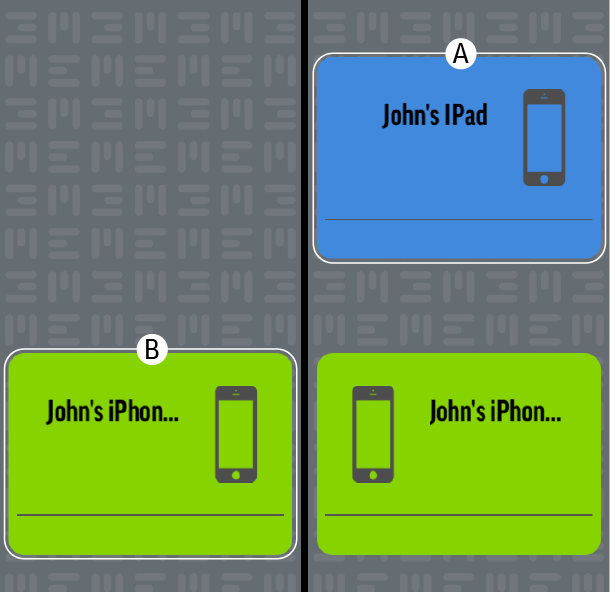

Copiar datos desde un dispositivo adicional
1. Copia de dispositivo
Arrastra el icono (A) hasta el icono (B) a la izquierda.

2. Copia de categoría
Para copiar una categoría individual, arrastra la categoría desde (A) hasta (B) (de derecha a izquierda).